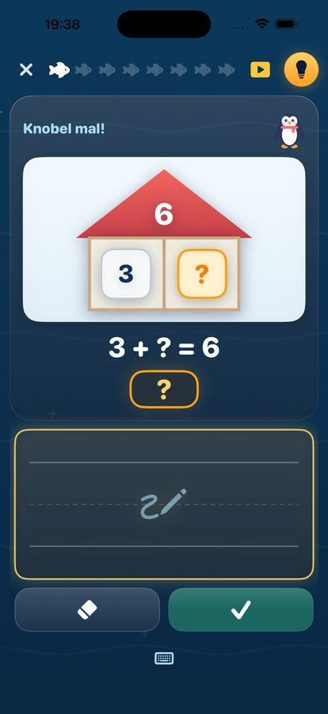
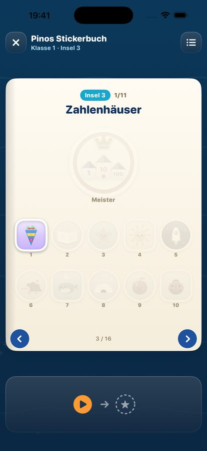

Mit Pinguin Pino durch die Grundschul-Mathe: 63 Inseln von Klasse 1 bis 4 – ohne Werbung, ohne Datensammlung.
Bei Apple in Prüfung

Grundschulkinder, Klasse 1 bis 4
iPhone und iPad, hochkant und quer
Keine Werbung · kein Konto · kein Tracking
Preise in Euro für Deutschland; in anderen Ländern zeigt der App Store den Landespreis. Abos verlängern sich automatisch und lassen sich jederzeit in den Einstellungen deiner Apple-ID kündigen.
Verantwortlich: Alexander Matthias Müller – Perlage Apps, Barnefeldstraße 12E, 31515 Wunstorf, Deutschland, E-Mail: info.perlage-apps@web.de. Du hast das Recht auf Auskunft, Berichtigung, Löschung, Einschränkung und Widerspruch (Art. 15–21 DSGVO) und kannst dich bei einer Aufsichtsbehörde beschweren, z. B. bei Die Landesbeauftragte für den Datenschutz Niedersachsen, Prinzenstraße 5, 30159 Hannover. Stand: November 2026.
Elternbereich (Zahnrad, Elternfrage) → im Profil des Kindes, z. B. das Verfahren beim schriftlichen Minus oder die Schreibweise der 4 und 7.
Ja. Im Elternbereich „Mein Kind schreibt mit links“ einschalten; dann stehen Schreibfeld und Knöpfe auf der linken Seite.
Elternbereich → Vollversion → „Käufe wiederherstellen“.
In den Einstellungen des iPhone oder iPad → dein Name → Abonnements. Wird in der Gratiswoche gekündigt, fällt nichts an.
Noch eine Frage? Schreib uns: info.perlage-apps@web.de